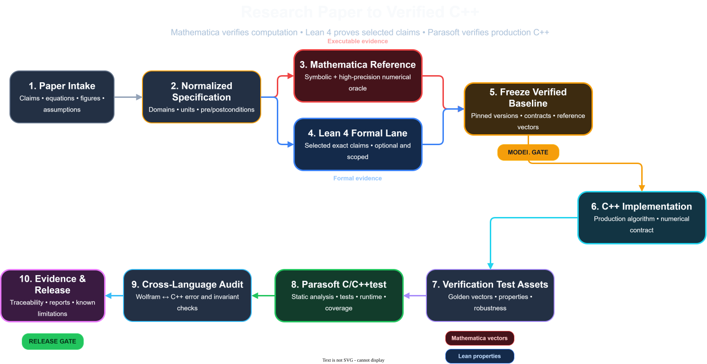
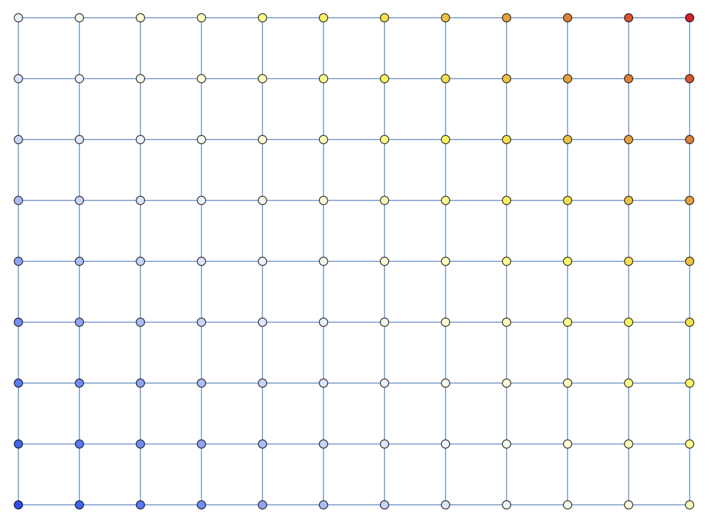
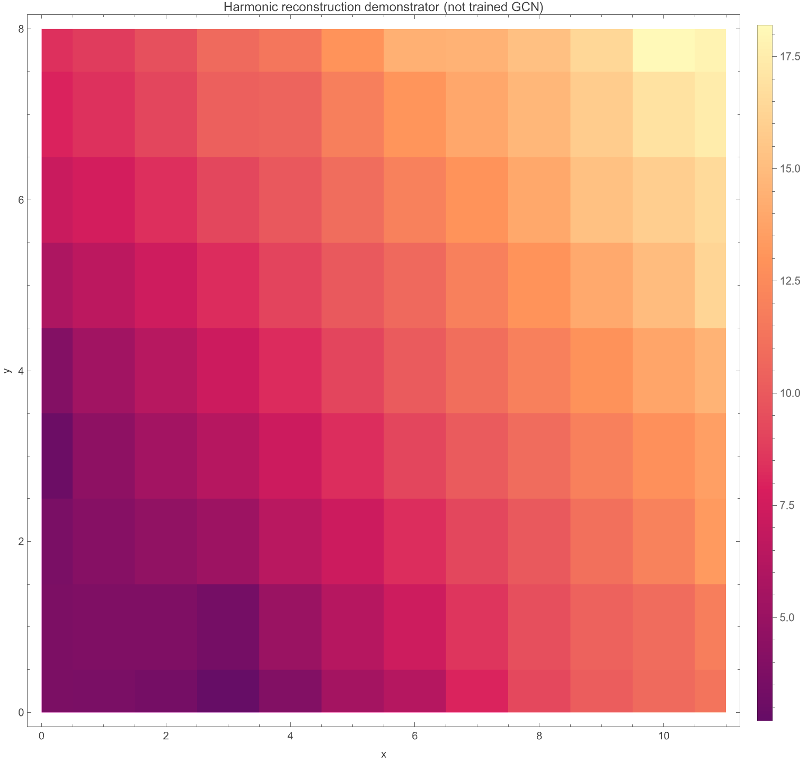
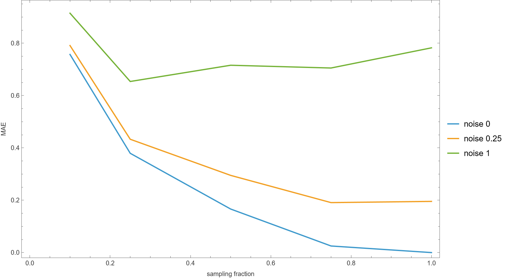
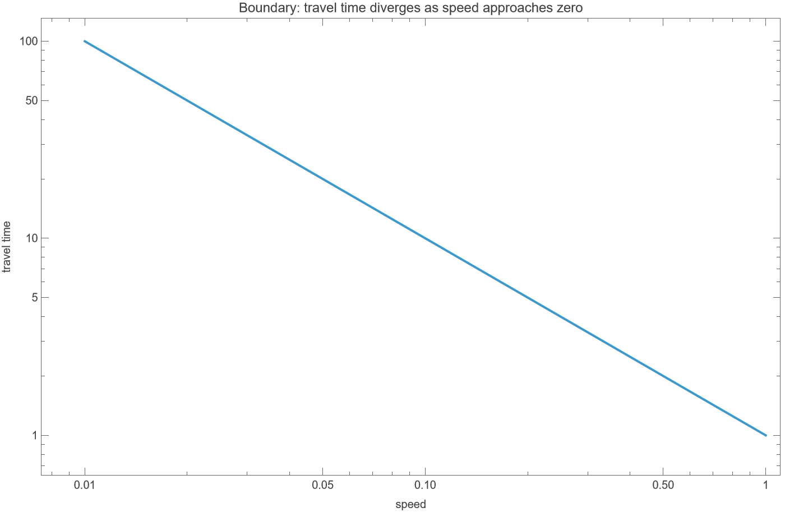

HeartGCN: paper → Mathematica → C++
The actual end-to-end story of turning cardiac graph mathematics into executable contracts, differential tests, and a deployable Qt application.
ACTUAL EVIDENCEASSUMED TEACHING GATELIMITATIONS VISIBLE
Meister et al., “Graph convolutional regression of cardiac depolarization from sparse endocardial maps,” arXiv:2009.14068v1
Research paper to verified C++

This master deck applies the workflow to the HeartGCN case and distinguishes actual, illustrative, and blocked stages.
What was actually achieved
Mathematica audit
C++ CLI validation
CTest
Manhattan values
Delivered
Wolfram package/notebook, audit and exports, C++20 core, CLI, Qt 6 GUI, four export files, deployed app.
Not claimed
No trained GCN reproduction, clinical validation, Lean proof, Parasoft run, or measured coverage.
Evidence legend
Executed
Local artifacts, results, build, or smoke-run evidence.
Production method
Target workflow, never presented as measured.
Cannot reproduce
Inputs, weights, or clinical data unavailable.
Why Amp was the most suitable tool for this project
- Long paper → spec → Wolfram → C++ → test orchestration.
- Read PDF, code, notebooks, ledgers, build files, and reports.
- Used specialized skills and local Mathematica/CMake/CTest/Qt tools.
- Created and verified artifacts with claim-level traceability.
- Continued context through referenced threads.
- Handled user feedback mid-flight.
- Depends on available tools and data.
- Requires evidence discipline and user review.
Amp cannot replace clinical validation or formal assurance.
Why HeartGCN fit—and where it stops
Pros
- Graph-native physical system; sparse-to-dense task.
- Explicit GraphSAGE aggregation/update equations.
- Weighted LAT/QRS loss.
- Anisotropy and travel time.
- Synthetic workflow supports numerical contracts.
Limits
- No code, weights, raw meshes, fibers, preprocessing bounds, data, or splits.
- Cannot reproduce the trained 20-layer GCN, figures, 8 ms / 7 ms MAE, or clinical claims.
- Harmonic rectangular grid ≠ cardiac anatomy or learned GCN.
One chain, explicit gates
Claim gate
What is specified?
Numerical gate
Do implementations agree?
Release gate
What ran, did not run, or is blocked?
Contracts that cross languages
| ID | Contract | Wolfram | C++ |
|---|---|---|---|
| GCN-AGG-01 | Neighbor mean, stable shape | MeanSAGEAggregate | meanSAGEAggregate |
| GCN-UPD-01 | Self + neighbor affine terms + activation | GraphSAGEUpdate | graphSAGEUpdate |
| LOSS-LAT-01 | Weighted LAT residual | WeightedLATMSE | weightedLatMSE |
| PHYS-ANISO-01 | Tensor → length → time | AnisotropyTensor | edgeTravelTime |
| WAVE-01 | Seeded shortest path | SyntheticWavefront | Dijkstra wavefront |
demo1-results/docs/claim_ledger.md · normalized_specification.md
Executable equations, honest scope
GraphSAGEUpdate = sigma(Wself.self + bself + Wnbr.mean + bnbr)
WeightedLATMSE = (1/N) Sum[alpha_i (prediction_i-truth_i)^2], alpha_i = 2 if measured, 1 otherwise
EdgeTravelTime = virtualLength / speed
MeanSAGEAggregate[x_List, OptionsPattern[]] :=
If[x === {}, zeroOrMissing, Mean[x]]
WeightedLATMSE[p_, y_, mask_] :=
Total[MapThread[
If[#3, 2, 1] (#1-#2)^2 &,
{p, y, mask}]] / Length[p]SparseReconstruction is a harmonic demonstrator—not the paper's trained GCN.
Behavioral plots—not clinical efficacy




Actual local Mathematica exports under demo1-results/exports/.
12 / 12 actual checks passed
Mean aggregation, update, weighted LAT/QRS losses, anisotropy tensor, virtual length, travel time, shortest path, harmonic reconstruction.
Evidence
HeartGCNModel.wl · HeartGCNNotebook.nb · audit_report.txt · validation_results.json · vectors · plots
The comments thread did not rerun it; the source project thread ran and verified the current audit and validation results.
Notebook feedback, BOM failure, recovery
Feedback
Inputs lacked explanation. The first Text-cell insertion introduced a UTF-8 BOM and made the notebook unreadable.
Correction
Preserve every original Input/Section cell, add only explanatory Text cells, remove BOM, verify structure. Later, source documentation around MeanSAGEAggregate improved clarity.
(* Mean neighbor features for one node. Empty neighborhoods preserve output dimensionality. *) MeanSAGEAggregate[features_, neighbors_] := ...
https://ampcode.com/threads/T-019f7984-9c6a-7201-a007-43930c3f6c63
Portable core, CLI, and deployable Qt GUI
C++20 core
Framework-independent std::vector functions matching Wolfram contracts.
Numerics
Dijkstra grid wavefront, harmonic reconstruction, seed 42, Gaussian elimination with pivoting.
Qt 6
GUI + CLI. Qt Charts unavailable; QPainter used instead.
demo1-results/CPP · https://ampcode.com/threads/T-019f798a-645f-715d-bbcc-ee0caaec5010
Same contract, different runtime semantics
(* Wolfram *) VirtualEdgeLength[d_, tensor_] := Sqrt[d . tensor . d] EdgeTravelTime[d_, tensor_, speed_] := If[speed <= 0, Infinity, VirtualEdgeLength[d,tensor]/speed]
// C++
double virtualEdgeLength(const Vec& d,
const Matrix& tensor);
double edgeTravelTime(const Vec& d,
const Matrix& tensor,
double speed);Shapes
Validate before indexing.
Non-finite
Define NaN and infinity.
Tolerance
Scale and conditioning matter.
Build, tests, exports, deployment, launch
CMake
C++20 / Qt 6 build.
Tests
CTest 1/1; CLI 12/12; 108 grid values.
Exports
Four files non-empty.
App
windeployqt + GUI smoke.
The C++ demonstrator running ACTUAL PASS
12 / 12 checks visible in the app ACTUAL PASS
The oracle export was wrong
Wolfram boundary_vectors.csv
transverse value: "-Power-"
Malformed serialization escaped the oracle layer.
C++ corrected export
sqrt(3) = 1.7320508075688772
Differential comparison exposed and corrected it.
Oracles are evidence—not infallibility.
What a production C/C++test gate would do
Static analysis
CWE/CERT/MISRA/AUTOSAR configuration and disposition.
Tests + runtime
Claim-linked tests, memory, UB, and robustness checks.
Coverage
Statement, branch, condition, and required MC/DC evidence.
Expected targets: configuration, findings, dispositions, test log, coverage report, trace links. Teaching narrative assumes the gate; evidence status remains NOT RUN. No counts or percentages fabricated.
Bounds and graph-size safety
// BUG: CWE-125 / ARR30-C style for (size_t i=0; i<weights.size(); ++i) out[i]=weights[i]*joined[i];
// FIX
if (weights.size()!=joined.size())
throw std::invalid_argument("dimension mismatch");
out.at(i)=weights[i]*joined[i];// BUG: CWE-190 / 681 int count = nx * ny; vector<Node> graph(count);
// FIX
if (nx==0 || ny>max_size/nx)
throw std::length_error("grid too large");
size_t count=nx*ny;Travel time and floating point
// BUG: CWE-369
double edgeTravelTime(double l,double s) {
return l/s;
}// FIX
if (!isfinite(l)||l<0) throw invalid_argument("length");
if (!isfinite(s)) throw invalid_argument("speed");
if (s<=0) return numeric_limits<double>::infinity();
return l/s;Do not compare approximate floats with equality. Define NaN/infinity policy first, then use justified absolute/relative tolerances.
Simple no-framework style
// LOSS-LAT-01 / WL-WeightedLATMSE
check(near(weightedLatMSE({1,3},{0,2},{1,3}),1.0),
"TC-LAT-01");
// PHYS-TIME-02
check(isinf(edgeTravelTime(2.0,0.0)),
"TC-TIME-ZERO");// PHYS-LEN-01 check(near(virtualEdgeLength(transverse),sqrt(3.0)), "TC-LEN-SQRT3"); // GCN-UPD-01 check(throwsInvalidArgument(badDimensions), "TC-UPD-DIM");
Representative production additions/pseudocode; no Catch2 or GTest claim.
Decision evidence for edgeTravelTime
Statement: each executable statement
Branch: true/false outcomes
Condition: atomic Boolean outcomes
MC/DC: each condition independently changes the decision
| Test | finite L | L ≥ 0 | finite S | S>0 | Expected |
|---|---|---|---|---|---|
| nominal | T | T | T | T | L/S |
| NaN length | F | — | T | T | throw |
| negative | T | F | T | T | throw |
| NaN speed | T | T | F | — | throw |
| zero speed | T | T | T | F | Infinity |
Target / expected evidence only; no measured coverage.
What the evidence supports
| Stage | Status | Evidence / reason |
|---|---|---|
| Claims + normalized spec | ACTUAL PASS | Ledgers and specification |
| Mathematica | ACTUAL PASS | 12/12, vectors, plots |
| C++ core / CLI / GUI | ACTUAL PASS | Build, CTest, CLI, deploy, smoke |
| Differential workflow | ACTUAL PASS | Found “-Power-”; corrected sqrt(3) |
| Parasoft | ILLUSTRATIVE NOT RUN | Methodology only |
| Lean | NOT PERFORMED | No artifact/build evidence |
| Trained GCN / clinical claims | BLOCKED BY DATA | Weights, meshes, fibers, data absent |
Reproducibility starts with honest boundaries
Lessons
- Normalize before translating.
- Separate demonstrator from clinical model.
- Audit both sides of differential tests.
- Recheck structure and encoding after feedback.
Next
- Acquire author code/data/weights/meshes/fibers.
- Harden dimension and non-finite contracts.
- Run real Parasoft and measured coverage.
- Formalize only justified Lean targets.
- Perform approved clinical validation.
Notebook thread: https://ampcode.com/threads/T-019f7984-9c6a-7201-a007-43930c3f6c63
C++ thread: https://ampcode.com/threads/T-019f798a-645f-715d-bbcc-ee0caaec5010